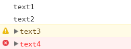
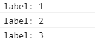

ブラウザの開発者ツールの機能の一つであるコンソールの事を指します。
開発者ツールは大体のブラウザでF12で開くことができます。
コンソールの主な利用目的として、
と言うのが挙げられます。
javascriptではエラーなどが起こった場合、画面上でエラーが確認できるわけではなく、ブラウザの開発者ツールの中のコンソールにエラーメッセージが表示されます。
これだけでjavascript開発におけるコンソールの重要性が分かっていただけると思います。
WEB開発には欠かせないもので使いこなすことでより良いWEB開発を行うことができるでしょう
そしてconsoleを操るために使われるのがconsoleオブジェクトです。
ブラウザで使用できる開発ツールのコンソールへアクセスする機能です。
基本的には、デバックや動作確認をするために使用されます。
今回は実用性のありそうな関数をいくつか紹介します。
コンソールにテキストを出力する
ソースコード
//一般的なログ情報を表示
console.log('text1');
//メッセージタイプのログ情報を表示
console.info('text2');
//警告メッセージを表示
console.warn('text3');
//エラーメッセージを表示
console.error('text4');
実行例
説明
console.logを使うことでログ情報を表示することができます。
info,warn,errorなどを使うことによって色分けなどがされ見やすくなります。
タイマー
ソースコード
//タイマースタート
console.time('timer');
//ここに測定したい処理を入力してください
window.alert();
//タイマーストップ
console.timeEnd('timer');
実行例
説明
コンソールにテキストを表示する以外のconsoleオブジェクトもあります。
これはタイマーです。javascriptの処理時間を計測します。
console.timeでタイマースタートし、console.timeEndでストップします。その間の処理にかかった時間を測定します。
()の中はラベルを設定します。
今回サンプルのプログラムではアラートダイアログを閉じるまでの時間が表示されています。
自分の作ったプログラムがどのくらいの処理時間なのか知ることができて勉強になりそうですね。
カウント
ソースコード
for(i = 0; i <3; i++){
console.count('label');
}
実行例
説明
count()を呼び出した回数を数えます。
該当する箇所が何回呼び出されたかを確認できます。
これも実用性がありそうです。
今回consoleオブジェクトについて調べてみて、consoleオブジェクトがWEB開発するうえで実用的な関数が沢山あることを知りました。